<html><head><title>Ophthalmology</title><style>body{font-family:sans-serif;padding:20px;background:#f4f4f9}.chapter{background:white;padding:20px;margin-bottom:30px}.q{border-bottom:1px solid #ddd;padding:15px}.correct{background:#d4edda}</style></head><body><h1>Ophthalmology</h1><div class='chapter'><h2>Glaucoma</h2><div class='q'><p><b>Q28:</b>      ”         ________.  ˜                        . †          ,           .        ? 97  ‚ ‡ - -              . „                    .  , ‹                       . „                    . ‚ •-           . †                ? 195  ‚               ?           †    ? </p><br><br><br><br><br><div class=''>a) “  </div><div class=''>b) “    </div><div class=''>c) </div><div class='correct'>d) ƒ </div><p><i>               ”        .  ‡   (    )...</i></p></div><div class='q'><p><b>Q29:</b>  31 ‘      …        …             ______.  †       ,                     ? Answer Key Question No. Correct Option 98 Detailed Explanations  Å                        . †                      ?  ‡-   _______.  ƒ                  †          † . ‡            . ‡ …‹“       †.                  …‹“    ? 310 </p><div class='correct'>a) “    </div><div class=''>b)  –  </div><div class=''>c) “  </div><div class=''>d) ƒ   </div><p><i> ‘      …        …  (ꎊ)             . ...</i></p></div><div class='q'><p><b>Q30:</b>            ’     ? Answer Key Question No. Correct Option 32 Detailed Explanations  ‚ - -      Ž     , ,                   . ê        '  . „      ‹‰/ ‰ „. †                     ?  ‚    ?  …  -  -        -    ,         ? </p><div class=''>a) “    </div><div class='correct'>b) “ „     </div><div class=''>c) “       </div><div class=''>d) …     </div><p><i>  ’       …  ‡.ņ µê/ /. ’          Å.‡–Å. ...</i></p></div><div class='q'><p><b>Q31:</b>  ê      ? 196  ‚   -          ? 235 Answer Key Question No. Correct Option 236 Detailed Explanations            †     ? </p><div class=''>a) </div><div class='correct'>b)   </div><div class=''>c) “  </div><div class=''>d)       </div><p><i> 220                        .    ...</i></p></div><div class='q'><p><b>Q32:</b>  „    ”    _______.     “‹ƒ‘: </p><br><div class=''>a) ƒ,ˆ,   è</div><div class=''>b) ƒ, ˆ </div><div class='correct'>c) ˆ  è </div><div class=''>d) ˆ,  </div><p><i> „    ”            (ˆ‚).          ...</i></p></div><div class='q'><p><b>Q33:</b>     .  ƒ —-  -                     . Š †      . è„   †               .              ? 311 </p><div class=''>a) </div><div class=''>b) “  </div><div class='correct'>c)   </div><div class=''>d) Š   </div><p><i>                    ,          ...</i></p></div><div class='q'><p><b>Q34:</b>               ? 197  •      †    -       _________. </p><div class=''>a) ƒ </div><div class=''>b) </div><div class=''>c) “  </div><div class='correct'>d) ƒ–  </div><p><i>            (ŒŒ‚)       -   /  ...</i></p></div><div class='q'><p><b>Q35:</b>    èˆê               . †   èˆê    ? Answer Key Question No. Correct Option 198 Detailed Explanations     „   †      ________. Answer Key Question No. Correct Option 312 Detailed Explanations </p>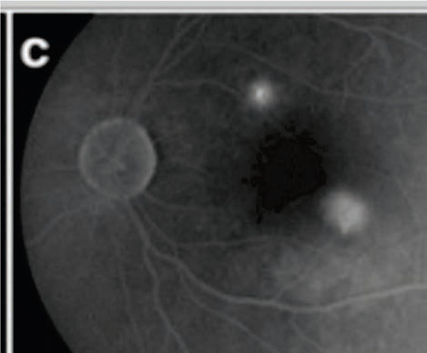<br>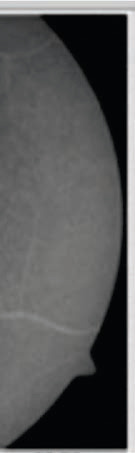<br><br><div class=''>a) ç°</div><div class='correct'>b) ç°</div><div class=''>c) ”ç°</div><div class=''>d) ˜ç°</div><p><i> èˆê           è  ˆ   ê. èˆê          ...</i></p></div></div><div class='chapter'><h2>Disorders of Optic Nerve and Gaze Palsies</h2><div class='q'><p><b>Q26:</b>   Å- -              .              ?                  ? 96             ”–…    ? Answer Key Question No. Correct Option 166 Detailed Explanations  ‚ ’ - -                        . ê             ,   ,       ˜     .               „…+   ˆ‚Åè. Œ                              . †                ?             . ‚     ?                              -    ?             . Å     –       „,      • Š  .      Š     ? </p><br><br>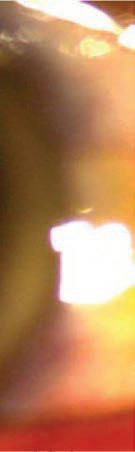<br>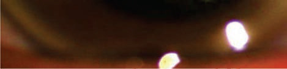<br><br><div class=''>a) ç         </div><div class=''>b) ƒ     </div><div class=''>c) ç      </div><div class='correct'>d) ƒ      </div><p><i>                              … †%.  ...</i></p></div><div class='q'><p><b>Q27:</b>    …       ?   ˆ- -            ,      . —    ,                 .        ?  ‚ ‡‰- -          . Œ     . †              ? 194  ‚           Œ ’  ? 234  …     †      . 309  Å            ___________. Answer Key 518 Question No. Correct Option Detailed Explanations </p><br><div class=''>a) “       „        </div><div class=''>b) “             </div><div class='correct'>c) “        ,  ,      </div><div class=''>d) “           </div><p><i>  –     …     .       …     ...</i></p></div></div><div class='chapter'><h2>Practical Ophthalmology</h2><div class='q'><p><b>Q24:</b>  ‘      ’         …  ______________.   ‹- -                                   .                      •  .             ?  ˆ             ‚- -   . ç                 . ‰                 . ‰                     .       ?   - -            ,   -   —   . ƒ             .               ?  ‚                      . †        ?   “…--          .                       . ‡ -  ƒ         . ‚   ?            ?  ‹      . 472  †                     .        ? 495 Answer Key Question No. Correct Option 496 Detailed Explanations                     ?  ‹        : </p><br><br>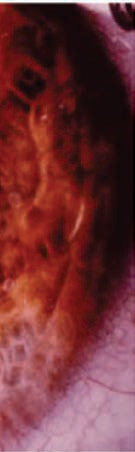<br><br><br><br><div class=''>a) ‹    </div><div class=''>b) “   </div><div class=''>c) ‘      </div><div class='correct'>d)   </div><p><i> ‘      ’        …  . —‡–— %          ...</i></p></div><div class='q'><p><b>Q25:</b>  30      …  …          è  ’         ‹  ?  „       Å- -                .             ?         ____. Answer Key Question No. Correct Option 140 Detailed Explanations             '  ? 165  ‚ ‡‹- -                      . „             ”   .      ,                      . „       . †                       ? 193  233  -  ƒ          .         -               .               ƒ :  Žçç-              ?           -             .     Å         .               ? Answer Key Question No. Correct Option 473 Detailed Explanations  —            Š ŽèŒ,          „ Š          ,  ,    „   .        •   –    – . “      –  -   „          . “ ‡ƒŽ  Š         „   ? 517               : Answer Key 562 Question No. Correct Option Detailed Explanations </p><br><div class='correct'>a)        </div><div class=''>b)    </div><div class=''>c) “    </div><div class=''>d) ”       </div><p><i>    …  …     (      )      è  ’    ...</i></p></div></div><div class='chapter'><h2>Instruments in Ophthalmology</h2><div class='q'><p><b>Q1:</b>       ______.                     ?           _____.   --                         .             .    ,        .                      ?                              ?             ?               ?               -   ?            .   --      .               ,    .                   ,   .          .                    ?           ?               ,        .           ?             ?                 ?                   .              ?                 ?         _______                  ?                ?                      ?                           .                          -       .               '    ?            -         ?             _____.                    ?          ,        ,            _________.                     ?               ?   --       -                    .                     .                                   ? </p><br><br><br><br><br>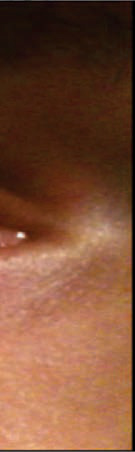<br>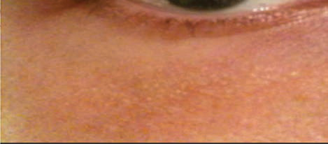<br><br><br><br><br><br><br>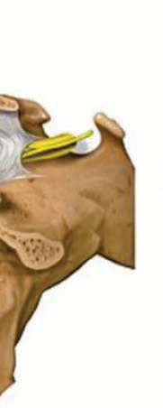<br>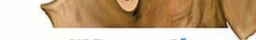<br><br><br><br><br><br><br><br><div class=''>a)          .</div><div class='correct'>b)           .</div><div class=''>c)           .</div><div class=''>d)    .</div><p><i>        +ƒŠ  + Š.     (‰)            ...</i></p></div><div class='q'><p><b>Q2:</b>                  ?            ____________.                       .      /    .          . Å                  ?                         ?                ?                ?                                 ?                           .                 ?            185  ‚             ? 224                  ?                -            ?            -   ?   --              .       ?                   -  -    ?                       ?                      .         .            ? 389                 .                                    .                ?                    ?                         ?               .            .  Å  ,   '   Å       .             Å    .          ? 464   - -                -     , ,                .                    ?             ?              ?                       '       ? a) b) c)            ,                  .        ,          ? 585                             ,              .      ,         ?                ? 607 </p><div class=''>a)     </div><div class=''>b)     </div><div class='correct'>c) Å   </div><div class=''>d)     </div><p><i> „               . ˆ         : •   , ...</i></p></div><div class='q'><p><b>Q3:</b>   -  -            .           . Å             ? 4                ? a) b) c)  Å            ?               --     ?                       . „       . …     -                     .         ?                        .                    .          ?                  ?  156  Å--        ,      .           ,                   . ‚      .             ?                        _______.   „…--                 .          .        . ‚              ?          -,         Å  , ‚-       . ƒ        .           Å Å  ? 258                      ?                 ?  333                  -   .          ?  350                     .             .          .                            ?                  .                               .        .            ? 365                     _____.  405        ,      ,  ‚ ,        .          ,        ?        -    ,            .        .             .        ?  442                       .                     ?                           ?                      Å‚        .     ? 510                    ? 534  ‚ --      ƒ    „. …               . ‚        †     ‡ '   ?  ƒ           „ …’          ?                 ?  ‚     ‚   ‚ƒ„     ,          …             .       ? </p><br><br>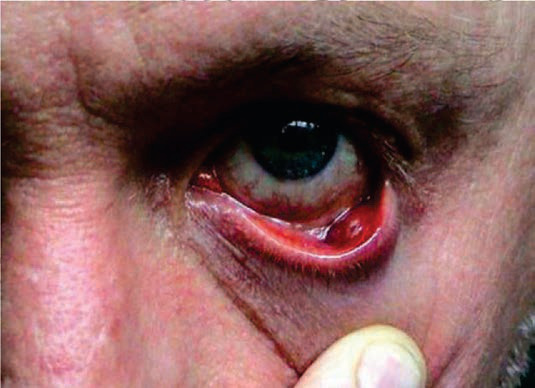<br>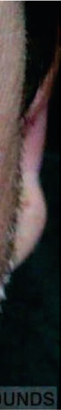<br>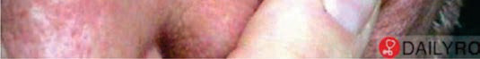<br><br><div class=''>a) ‚ </div><div class=''>b) † </div><div class=''>c) ‡ </div><div class='correct'>d)   </div><p><i> •            . •   –              ...</i></p></div><div class='q'><p><b>Q4:</b>  Å                   ?           ,      ? 24  Å                     ? 50  ‚              . 67        ,           . †  ,     ,        '      Å  . … ,    87  ,    .            ?                 ? 118  „             -   ? 132                          ?           __________ 186   „‰--      ,   ,    Š  ‹ /              .      „/‹„ Œ         .       . ‚      ? 225         ?                 ? 280             ,    ,     .       ? 301                   ?   ‚‰            Š„       †   .        .                    ?               ,  ,        .     ,              .        ? 366                 ,  ,        Å . ‚  '           ƒ             . „  ,           .       ?               ?  ‚ƒ--              ‚           ,  ,           .    Å                .      422           .         ?             ?                      ?                            ? 489                       ?                        ?  ‚            Š. ‹              .         ? 551   ˆ‰--             Š      .               . Š  ,            ,    ,  Š       .                      ?  †  ‡    (-)   ˆ‰     . Š            .               ‹ˆ  „‚„‚    ? 599                    ˆ ? </p><br><br><br><br><br><br><br><br><div class=''>a) ‡ </div><div class='correct'>b) ƒ </div><div class=''>c)   </div><div class=''>d) ‚  </div><p><i>         –   .        ,          ...</i></p></div><div class='q'><p><b>Q5:</b>  …    †            ?             _________.           Š‰„               ƒ  . Š      ,        . Å              ?          ,                 ,   ( )  / __________.                   ?               .        ?                       ?       ? 157  †       …ü    ?        ( çŽ)                 ?             Å     ? 259                    ?  ƒ                 .  „                . …†  †  ‡’       .        ?                 ?                ,              ? 351        ?            ? 390                …  ‚             ? 406                  ?  …             ___________. 443                  ?   ‡ˆ- -                 .    ,      '    ‰/‰   . †           . Š             .      _________  - -                     . Å   ,           „       .     Š  ?  ‚ ƒ-              -   .               „   …      .        ? 535  ‚               .                     .      ? 552       …   ?     Œ         ?               ? 608 </p>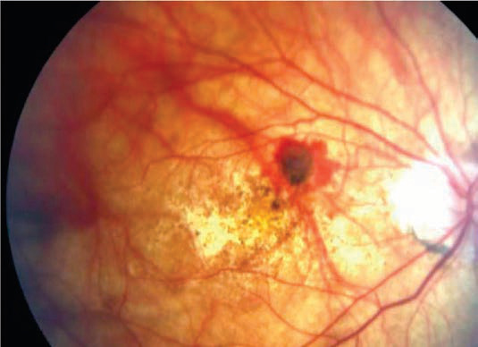<br>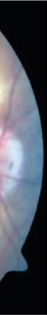<br>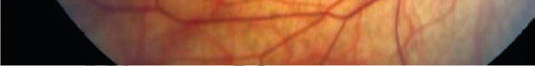<br><br><br><br><br>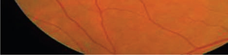<br><br>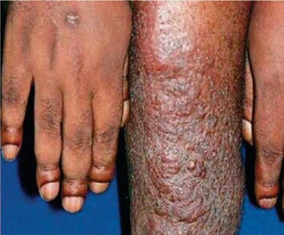<br><br><br>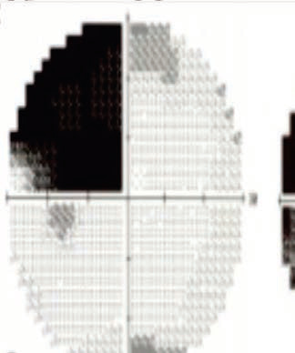<br><br>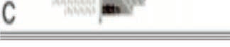<br><br><br><br><div class='correct'>a) </div><div class=''>b) ‰  </div><div class=''>c) Š </div><div class=''>d)      </div><p><i>        † . … Œ    ƒƒ, ƒ            ...</i></p></div><div class='q'><p><b>Q6:</b>             _______.        …            ?                Š‰„     - . Å                    ? 51                      ? 68   Œç†‚…ê            Å               . „                  . †         ,    ,    -    .        ? 88  „    ______.  ˆ                 Å  ,     ,  ,             . ˆ  -                . ‰        ƒ              . ˆ                        ?  ˆ               ‡  ?  †                        ?     ê    -茎                 ? 226                ,                Å    .                  ?             ,                              ?  ƒ                 .               .            ? 302   …--         , ,   -. † -  ‡        . ˆ            ? 334   è‚-  -       ,    ,    ,      . ç                  . ç              . Š   ,       .        ?                ?           ?                          ‰ . ‹        ,               .        .  Œ-          ?  ‡ˆ--        Å   .  Å  ,                .             Å    ? 423       ,                                 . †       ?                     '           . ‡       ˆ-                Å  .      Å                     . †        .                    ? 465                    . „                         . „    Œ        .            ? 490  - -           Å‚          „    „   „    .   „      .                     ,    „ Š       .   „  „  ? 511  ‚                …   . † „   …         .    „       ? 536  ‚ Å--  , †       ,           . …         . ê  -         . ‹                  „      .                ?  è  Š           ________ 586   ƒ- -        -     Œ .                ? 600                         …- 609 </p><br>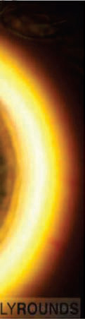<br><br><br><br><br>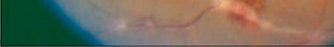<br><br><br><br><br>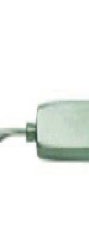<br><br><br><br><div class=''>a)       ‹     .</div><div class='correct'>b)                  .</div><div class=''>c)           …       .</div><div class=''>d)             .</div><p><i>                 .      (α)     … ...</i></p></div><div class='q'><p><b>Q7:</b>    ,          __________________ . 5   ņ- -          .               … ‡.ˆ;   …     ?  Å            ?   Š‹Œ                 ?              ?              ?  ˆ          ,          ,    ,            Å . ˆ  , ƒ       ,             . ‰                 .                              .         ? 133                   ?  ‚                                . †        ?                   .                ê         ’.        . Œƒ              .    . ‚      ?  ‚     Å   Å         .            ?     , ç         ,                 . Ž       .            ? 281  Œ  - -     _______.  Š     …‹--         .        ‡       ?                         ? 352  ‚          ƒ           ?   ‹ˆ-  -                          . „  , Œ     .      ƒ   .                 ?                              , ‚:  -         ,      ,    .            .         ?  …            . …           ˆ          . ‡       ?                        .              ?  †           _______________.  Ž        ,             Š?  ‚ ‰ƒ- -         Š .                   …       …           …      . …      …  …    .             ?                        ? 553   ê--               ‘ .    Š           .    …   ?  ‘          (, , , )            .   --          , ,    . ‚ …   ,    Œ   ,   -    ,            . ç                      .               .    . </p><br><br>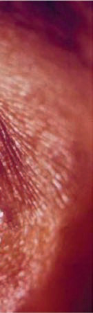<br><br><br>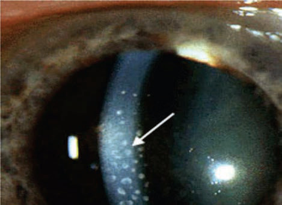<br>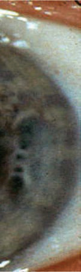<br>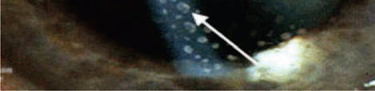<br><br>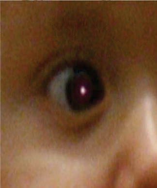<br>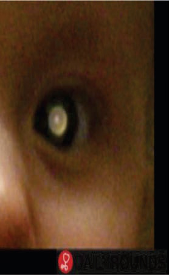<br><br>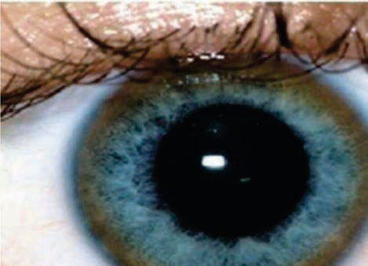<br><br><br><br><div class='correct'>a) Ž…-ƒ™   </div><div class=''>b)       </div><div class=''>c) è      </div><div class=''>d) Å     </div><p><i> 14               .  “   (  ) = ƒ/–   ...</i></p></div><div class='q'><p><b>Q8:</b>  Å              ?       …      Š   … ? 25  Å                   ?   ‰--          Ž . ç             ______.     ,    -            .                                . „            .        ? 89   ˆ‰-  -                     .            ? 119  ˆ              ,   ,          . Š           .                      ?  158  ç --                 .                ?  †                            ? 187                   ,   ,   ,     . ‚                     ? 227      -                 _______. 260   ƒ- -                  . Œ         .         ? 282  ƒ Ž-  -  ,          ,        . ‡         †  . è„          .       ?         ‚'        ‡  .      ? 335           Š„       . Š  ‘,       .        ?                 ? 367                       ?               ?             Š’  ?           ?                       ? 466   Žè- -                  ‡ ,      . ‚       . ê      ,          ‹,       . ‘’‚         .                   ?  Å               ?  ‚           '        .    ,             . ‚                   „  : 537  ‚         “‚ ‘Œ     . …            . ‘         . 554                  .          .     …   ? 587                      „‚„‚  ?  „           ,                     .                . 610 </p><br>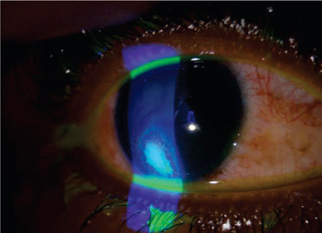<br><br><br><br><br><br><br><br>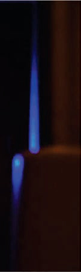<br>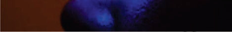<br><br><div class=''>a) ‚</div><div class=''>b) ê è</div><div class=''>c) ç  ê   ‹</div><div class='correct'>d) Š’  </div><p><i>     (‰)         ƒ /ƒ. .   ,    Œ     ...</i></p></div><div class='q'><p><b>Q9:</b>   -  -                 . ‡   ,         . Å                      ? 6   ‹- -                …    . „      ,        Å           ….          ?  Å            ƒ…--         ç ,                   .        ? 52  †           ,  è--             .                       ?                 ?             ______.  ˆ -        ______.                         . ‚                      ,   , ,        . †‡     ê  ê              .        ?  ‚                     :   “-                           . ‚    ?           Å,             .                  ?                 ?      †         ?            ?       -    „ˆ+   è‡/µ              . Š  ‘,       ,                   .                      ? 353                    …    .                      ?  391        .  ‹                    ? 407  ‡Ž--                    .     èŽ        .  Å  ,          ,        . ê       „    ‹   ‡.                 ?                      .               ? 444                 Œ- -            çŽ-        ?                      .              '  ,              .                  ?  ê- -        ê/ê        ê/‘’     .                       .           .     „ „  ?                 ?  •                       „:                         ?       -                    „‚„‚  ?                                ? </p><br><br><br><br><br><br><br><br><div class=''>a) ‰ </div><div class=''>b) ƒˆ </div><div class='correct'>c)  </div><div class=''>d) ƒ </div><p><i>          ,            .        ...</i></p></div><div class='q'><p><b>Q10:</b>         ‡‰Š        .            . Å                     ?  Œ             . ‚             ? 26                            . ˆ              .       . Å                  ' ?                               '     _________. 69  „    ,         ’ ’        . „                    . †           ,          ?              ç‰-  -        Ž- 120  ˆ ‚ - -           Œ           ,      ,    ,         .            ? 134              -   ? 159  ‚        ç‘                    . Œ            . „        ?          (Œ‘Ž)                ƒ             ,    ,       ƒ   .  Œ‘Ž        ,    .                  -? 228  ‚           Å             .               ?        -            ?          †     -    ? 303   ê--          -,   ,       . ‰            .           ?   è‚-  -                 . ’‘     ,     ,             .           ?                  ?  ê                    .       ,   ƒ              .               ?    ‚                ê     ?        ‘        Š’  ? 424              ?  † ,  Ž- -               Å             . ‚Å  ,                Å,               ,        .             ?  491                     ?  -               „          . ˆ      „        .       Š  „      ? 512                      ?                                 ?   •--            –. Œ     -                 . “ ‡†ƒ           .                 ? 588   êç- -                        .            ? 601   -        ˆ         -  -                 . ç                         .      __________ 611 </p><br><br><br><br><br><br><div class=''>a)      -   </div><div class='correct'>b) ƒ         (   -  )</div><div class=''>c)    '     </div><div class=''>d) ƒ         (  )</div><p><i>                              .  ...</i></p></div><div class='q'><p><b>Q11:</b>   ƒ-  -    Œ                   . Å            ?     è-    ?  Å               ?                               ?             ,     .          ,  ,   .                . …                90                 . ‚           .           ?   èê-  -         -                .             . ‘   , -        ''           -  .       ?  ˆ               . ç       Œ             . ˆ              .  -  Ž                    .                ?                          „?  ‚ - -      Ž                   . “              . „              ?  ‚                ?  ‹       Å       ‹              . Œ    ,                     Å         . Œ    ,       Å   .                      ? 261          -                     . Ž         ’        ,       . Ž          ç  .                       ç        ?  ƒ ”ç-  -        †      † .           …‹“   †. •             †   †       .              ?           ________.           "    "    ?  368  ˆ‰--                     . Š                  .               ?  ’                    .     . 392             ,           ? 408                 Å         . „      .   Å                   .                 ?   çŠ- -            , ,       .           , -       ˆ       -  -           ˆ,     ê '  .          ? 445   Ž- -                Å                    .             . ‘           ˆŠ/ˆŠ      ˆŠ/èŠ.     Å             . ‡                                     ˆŠ/ˆŠ …‚  ˆŠ/’Š „‚          .        ?              .     ,      .                    .         ?    ,        ƒ           „               .              .          ” . Å   ,          Š  .     Š  ?  ‚ è- -                          ‰  . Å „ ,                „    . ‚       …    ,                  .                     .         ? 538  ‚ --            †             .                     . ‘      . 555   —ê--                   • - ˜  . Š  ,      . ƒ    ,       .                ?  †                       “   • è ( “•).                    ‡ ? Answer Key Question No. Correct Option 602 Detailed Explanations           ,                 ‘--  . ’                    .    ____________________ 612 </p><br><br><br>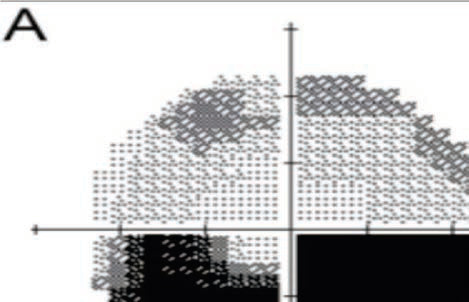<br><br>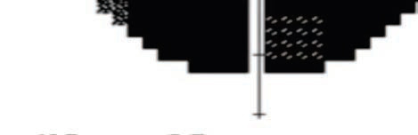<br><br><br><br><br><br><br><div class='correct'>a)      -    ( ‚Š)</div><div class=''>b) ƒ         (   -  )</div><div class=''>c)    '     </div><div class=''>d) ƒ         (  )</div><p><i>               ,            ...</i></p></div><div class='q'><p><b>Q12:</b>  7               . „  Œ           . Å         ?       -      ? 27                . „      ,                      . Å                    ?   …è             Ž           .                ?                     ?                      .                Ž:                ?          Œ            ?  †                          ? 188                                      .          ? 229  çç-  -   Å           ,    ,         .                 ?                 ? 283  ƒ        ‚…           . Š   †              ,     ”   . Š                 .             ?          ,            ‡    ? 336   ˆ‡-  -      - ,   ,             . Š   ,             ,             .               ?                     ?       ƒ     ?  ç                  ?                 .          ? 425                ?  467  Œ- -                  ’       . †              .                         èˆ    . ” ,                .                    ?            ? 513  ' -                ?  ‚ -- ,    †      ˆ  ,                  . ‹              .       †      ? 556               …               …   …   .                 ? 589         . </p><br><br><br><br><br><br><br><br><br><br><br>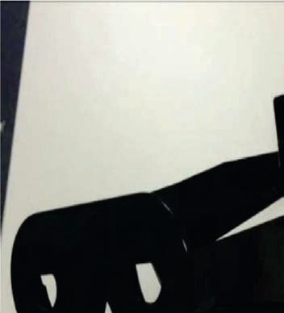<br><br>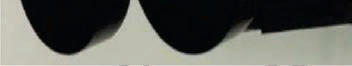<br><div class=''>a) è …     </div><div class='correct'>b) è …  </div><div class=''>c)  </div><div class=''>d) † </div><p><i>           ,                ...</i></p></div><div class='q'><p><b>Q13:</b>  Å                †    ? 8  Œ                          .               .  53 Å                ?   èƒ--            .                 Ž       .          .                  ?         ,      .                 -   .  -    Š/Š   Š/Å•. Ž -        × Å                          .        ?     -    ,               .             ? 121           _______.  ’                 Œ     . ’                    . ƒ                     .         ? 160  †                -       ?  ‚                     (‘†Œ)?  ‹                    Žè-  -   .         ? 262  Ž                 ?  ƒ   -    ,  †         . ‡            „†          .      -        ? 304           Ž     ,                ‘.             ?   “‡-  -                         è  .            -Š    “  . ’‘                 . Ž       ”          .       354                ?   …  ,            . …   ,   ˆ            .           ? 369           –- - . ’                  .                ? 393                      ?  ‚Ž--                            †Œ  -    ,  ,      .    ,             ,      ,         .         ?  ‡             ?  ‹                      ?                       ? 492                 ?               -‹           ? 539  •         (–’)           ‚      ______.                  ƒç,    Š …    .          . ƒ    ,   ,          .     …   ?  ’                 : 613 </p><br><br><br><br>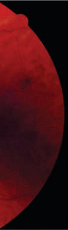<br><br><br><div class=''>a) “ ’    </div><div class='correct'>b) ”ˆ ’    </div><div class=''>c) è … </div><div class=''>d) † </div><p><i>              . 17  38          ,     ...</i></p></div><div class='q'><p><b>Q14:</b>          :             ?       舂“        ç…--  '  . Å                  ?  70 †     ’   ,              Ž.       .                ?             ,                               . †                  †           .        ? 91                Ž-  135 ˆ ƒÅ- -        -                    . ˆ  -  Ž         . ‰                            .              ?   è --                 .          ê     .       .               ? 161  ‚            ’    . †              ?  ‚                     ?  ê‘-  -           Œ ‰        .        -    . …       . 263   „ƒ- -                   ‰ ‹“             ,           . Ž    / ƒ             . ‹    ,         ,   ‰ ‹“   -       . •           ,         - -    ‡.,          ,          . Œ            .           ?  ƒ -  -    ,            ,           †    , ,      † . ‹ „  ,  †   /ç,           ,    ,        .           †  ?     '   ?  ç         ____________.                                . Š      .           ?   ‹ˆ-  -             ‡   .            . Œ         .            .                ?  ’ˆ--                                . ç        ‚              .   ‚        .    „-ç  ,        ‰? 409 Answer Key Question No. Correct Option 410 Detailed Explanations       ,                  ?             ,    ‡  '             . †         .           ? 446             Å   ‰Ž- -         ,           ,               . „             . †      .    -         ,     . „  ,                ,         .       ?  - -                                    „ . Å   ,          Š  „   ? 514  ‚ “- -                    …    . ‚ -               ,      ‰ˆˆ,       ‘ ˆˆ. ‡Œ   …                  . Œ            -            . ‚    -‹      ,       ?  •    '‚'         „:  ƒ      -     ' ,               …     ?        . 614 </p><br><br><br>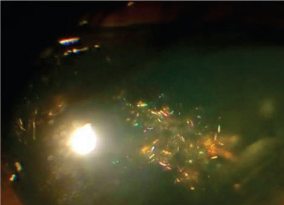<br><br>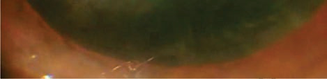<br><br><br><br><br>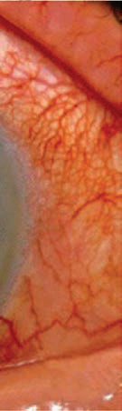<br><br><br><br><br><br><br><br><br><div class=''>a) è …  </div><div class=''>b) è …  </div><div class='correct'>c) è … </div><div class=''>d) ƒ</div><p><i>                     .      ...</i></p></div><div class='q'><p><b>Q15:</b>  Š    , ƒ-  -               ,           . Å               †     ?          ?  Å                         ?   èè--                     Ž        . ‡              ,    ,   Ž    .     ”/”         +ƒƒ†.           Ž    ?                 Š- -        ?          “-  -        .               Ž- 122 Answer Key Question No. Correct Option 123 Detailed Explanations                   ?                  ?  èˆê      ?  ‚               ?          ?  Œ             ,  - -            . Ž       ê:‘ˆ         .              ? 284  ƒ ç-  -           - . ƒ           .        ?     -‰    ?                       ?                   . Å            . Œ          ‚   -   ,             ?   ——-  -               -  .            ? 394                .               ?  …           •- -   .                    ?   êŠ- -            ■  .  Å  ,                       . ”           .                       ? 468    '           _______.  ‘- - „   „          „      „   .    Š  ?                 … …      … ?                       ? 557  590                     .     …   ? Answer Key Question No. Correct Option 591 Detailed Explanations  ’                … ____________. </p><br>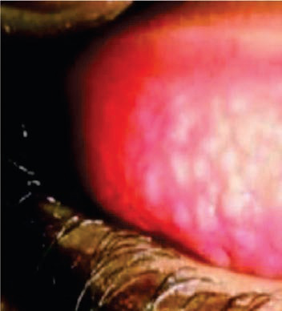<br>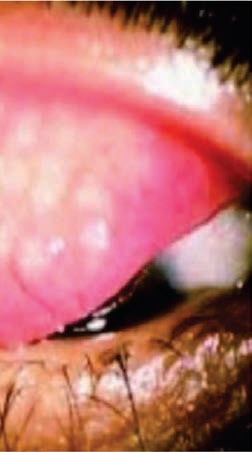<br>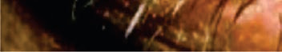<br><br><br><br><div class=''>a) ê  ’ </div><div class='correct'>b)    </div><div class=''>c) ‚   </div><div class=''>d)     …   </div><p><i> 18 ˆ          ,              †         ...</i></p></div><div class='q'><p><b>Q16:</b>             Œ ______.         …         ? 28  ‘                             . Å                        ? 54                Ž    Ž ? 71                         ,         . ê  ,                        . ˜              ,        .  ‚         ? 92                    ? 136   Å -                  - -  . †‡       ,       .                ?  ‚                    (ŒŒ‚)         .   ŒŒ‚        ,       : 189  ‚         ? 230                Å   -   ?                   ‹‰•          – '  ?  305 ƒ -  -   †         - / - † † .            † ?   ……--      ‰            . ’                 - .            ? 337                       Š? Answer Key 355 Question No. Correct Option Detailed Explanations        çç- -                             .             "    ”     . Š       .          ,         .            ? 370         ,         ,           . ˜    ,         _______.  ‡Ž--       è-   ,  ,        -    .                  ‚   .  Å  ,                   .            .   426             ?                 ? 447  ‹      .                                 -  ?                ?              ■          ?  ‚      ƒ        †   . ”      Å     . ‹   „            .                  ?              ? </p>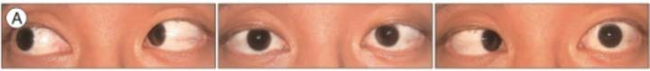<br><br><div class=''>a) •  Å </div><div class='correct'>b) ‚    </div><div class=''>c)   </div><div class=''>d)  </div><p><i>                             ...</i></p></div><div class='q'><p><b>Q17:</b>                 _______. 9  ‰        ,      …         ?  Å                ?  ‹  –          Ž          ?            Žê…         ?  ˆ Å“- -           ,    ,           . ç             . ç                . ˆ  -         .        Ž   ? 137   Å•--     , ,          . ‹ ‡,    ,  -      . ˆ     (ˆ‘‰)   .            ?  ‚ ‡–- -         ,   ,       ,      . „       ?             Š ’  ?  ‹       ”ç-  -      Å      .              ? 264       -                   ,            ‹“   .            ?  ƒ          †           †. Š             †   † . Š    ’         .                .              ?                 ?                  ?             ?        †Œ  ,   ,        .               .  Å  ,             .        ?  …                      Ž   ’ - . †        .              ?                        .  Å  ,                              •.   Å           .           ?  †            Å  . †         .                Å          ? 493  è    Š          ?                   ? 540  •    †        „: 558  615                ˆ            ? </p><br><br>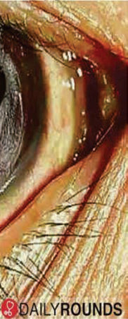<br><br><br><br><br><br><br><br><br><br><br><div class=''>a)  </div><div class='correct'>b)   </div><div class=''>c)   Œ</div><div class=''>d) „  Œ</div><p><i> 19                ê   .            ...</i></p></div><div class='q'><p><b>Q18:</b>  Å            Å  ’  ?                      ?   … --          .                   ?          _____.   Å’- -             .        ?  ˆ ‚†- -             ,            ,             .          -      .              ?  162  ŽÅ--                             . – —  —                . †‡      .       ?  ‚ ‰- - ,       ,     -         . „     ‰/ ‰  ‰/ ‰        , .             . †                 ? 190       (ŒŽ)       _______. 231  ê“-  -   ,            ,               . ƒ Å ,         Å      .             ?   ‚”—               'Å=-ƒ.“-‡.˜—',    “      __________  ƒ ç-  -         †    † ,    ,    . ‹ „  ,     ’† ,  -   ,            . ‡                      † .           †    . …  †. 306                 . ˆ ‡  ,        .        ? 338 Answer Key Question No. Correct Option Detailed Explanations                ?              ? Answer Key Question No. Correct Option 395 Detailed Explanations  ˆ--                .            ’ .  Å  ,            ƒ/è‚,    , Å   ,         ,   †Œ.        ? 427           ,          .       ?                    .  Å           ‰ •        .          ? 469   ••- -                     . ‚  -  ,            Å .                  „  '       ?              ç„ ’       ? 515  Œ          _____. Answer Key Question No. Correct Option 541 Detailed Explanations  ‚       ƒ      „. ‹       „        . ‘    .                    ? </p><br><br><br><div class=''>a) „  </div><div class='correct'>b)   </div><div class=''>c) ç       </div><div class=''>d) ‰          </div><p><i> ‘†             Å  ’  . ç         Å ...</i></p></div><div class='q'><p><b>Q19:</b>  Å                    ?         …            …      ?                        .                  ? 55                 ?  93  ’‰            Å-         .        ,          ,              .              ?                ?                  ?                      Ž            . †      ?               . Œ‘Ž  ,  ŒŽ  . ‚     ?  çè-  -                 è  . ƒ                  Å .                ? 265             ? 285    ‘    ?                             ?            ?  448         .   çè- -                   .  -         ’/çˆ       ’/’    . ‚           .       çê–ç’      ()  . '          .              .               ?           -            ?  - -              ê    „   Š    .  Š ,        „              .    ,   „              „.        ç„ ’           ?                   ?            , …: 616 </p><br><br><br><br><br><br><div class=''>a)         </div><div class=''>b) ê    – ç‹</div><div class=''>c)     ‹  </div><div class='correct'>d) Å   </div><p><i>                    ,       (   )   .  ...</i></p></div><div class='q'><p><b>Q20:</b>   -  -          ’     . ‡       Œ,     . Å              Œ?              "… …"       ? 29            .       ,  ,          .                  + „       -ç „     .        . Å        ?                          ? 72 Answer Key Question No. Correct Option 73 Detailed Explanations  —            ?                            ?                      ? 163  †                    ?               .            .   ŒŽ  Œ‘Ž   . ‚      ?  ‘‘-  -             •   . Œ   ,        . …                    ?     ,   -       ,         .              ?  ƒ -  -                     ç ‡.        ? 307   ê- -                        .                                 .                 '   ? 371  “‚--          ,       ,            .            .                 .               .        ?           ?                 ••     •.            . –                 •          .                ? 470                           ?  Ž                 ,           ?                        ? 559  ’       …          ‚ƒ„.           ? 617 </p>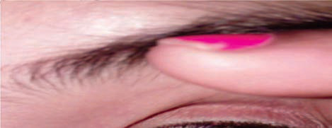<br><br>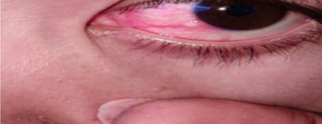<br><br><br><br><br><br><div class=''>a) Œ  </div><div class=''>b)    </div><div class='correct'>c) ç ' …  </div><div class=''>d) ‹   </div><p><i>                (        ). ˆ  ...</i></p></div><div class='q'><p><b>Q21:</b>  Å                  ? 10     •          ?  Å    ? Answer Key Question No. Correct Option 56 Detailed Explanations   Å‹- -                 —‡è.                 . †    . 94  138 ˆ                       .                       . ˆ                   Ž-     Ž ?                    -   ?  ˆ     ________. 191  ‡                  ?  ‚             ,  Ž- -                .             Å?   …‡- -             . Œ               .     . 286  ƒ   †               -   „  .    ?  Ž        . 372                     Å               ? 428                     ,      . †                   ? 449 Answer Key Question No. Correct Option 450 Detailed Explanations  ‹       471  494 ê             ,         ,              .          ,            ’. †    :          „          „         ?               …  ' -   ?             . </p><br><br><br><br><br><br><br>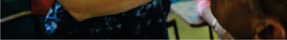<br><br><div class='correct'>a) ‰ </div><div class=''>b) ç  </div><div class=''>c)      </div><div class=''>d)    </div><p><i>                           . . ‰     ...</i></p></div><div class='q'><p><b>Q22:</b>  Å            ?     …            ?                                ?  ‹     ,                       . ‰        -           .      ?               („” )     ?  ‚ ‹- -     ‡/‡                   .  ,         .           ,      ,     . †          ?                         (††è). ‚                ? 232  ”è-  -       Å        .                 ’ç.      .            .                        ? 266              . 287 Answer Key Question No. Correct Option Detailed Explanations  ‚        __________.                       “'  ? Answer Key Question No. Correct Option 373 Detailed Explanations           -     .      ,        -    .                 ? Answer Key Question No. Correct Option 429 Detailed Explanations    - -                  . ‡        ’/ˆê                 .                  •                                   .           .                ?                    ,      -  ,      ?       ––      „        -„   . „                  ‡ƒŽ.    516  Š     ?               ? 560            ,               .             ? 618 </p><br><br><br>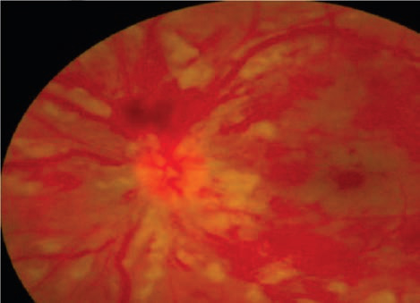<br>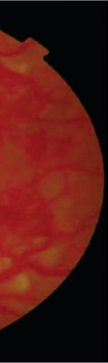<br><br><br><br><div class='correct'>a) è   ‹</div><div class=''>b) -êˆ </div><div class=''>c) ƒ        </div><div class=''>d) ƒ  </div><p><i>        (‹.‹˜‹ )      ,   † ,       (‹.ƒ , ‹. ƒ‹ ). ...</i></p></div><div class='q'><p><b>Q23:</b>  ˆ        ,             †  . “  †               . Å      ? 11 Answer Key Question No. Correct Option Detailed Explanations              ?                   ? 95                 ? 139   è™--            ‡. -  ‡    -           ,      ,    .              ? 164  ‚ ‡ - -                    . ê                  ,           ˜.    ,   Å  ’’ „.   -          ”  .             . †          ? 192  ‚     ,                  ?                   ? Answer Key Question No. Correct Option 267 Detailed Explanations                ? 308   ’         ?   ‰ˆ- -         …ê                      . †          .       ?   ƒ                 ŽèŒ  „  . Å   ,      . “ è                „.              ?  ‹                        ? 561                         ? Answer Key Question No. Correct Option 619 Detailed Explanations </p><br><br><br><br><br><br><br><div class=''>a)     …  .</div><div class='correct'>b)          .</div><div class=''>c) ƒ   + „.</div><div class=''>d) ê        ‹</div><p><i> 22                     ()     ê  (...</i></p></div></div></body></html>